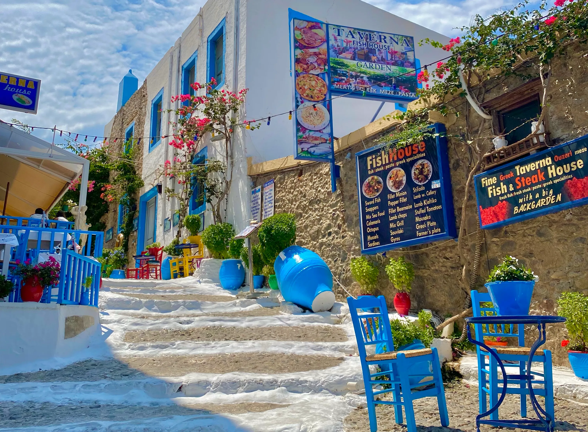

Početna
Novosti
Kontakt
O nama
Galerija
Galerija slika
Uživajte u slikama koje prikazuju ljepotu otoka Kos. Kliknite na sliku za uvećani prikaz.
Luka na otoku Kos
Plaža na Kosu
Povijesno područje
Brod na osami

Ulica na Kosu
Grad Kos
Najljepša plaža otoka
Pogled sa visine
Kupula
More otoka Kosa